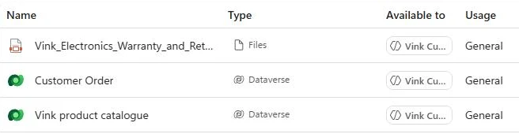

- Project deep dive
- Vink Customer Care Agent · Part 7 of 11
7 · Knowledge and the Billing child agent
Where this page fits
Step 1
Customer chat
This page · Step 2
Agent: instructions, topics, knowledge
Step 3
Agent flows (tools)
Step 4
Dataverse tables
Step 5
Background flows
Step 6
Care Hub app
Highlighted boxes are what this page explains. The chain runs left to right, top row then bottom row.
The story so farNot every message needs a ticket. Some just need an answer from policy, or a specialist for money questions.
Knowledge: answers from Vink's own content
WhatKnowledge sources are documents and tables the agent searches to write grounded answers, with citations.
WhyPolicy questions (warranty length, return windows) shouldn't be scripted topic by topic, and shouldn't be guessed.
DemoHow long is the warranty on a laptop? answered from the policy PDF and the product catalogue.

| Source | Type | Answers questions like |
|---|---|---|
| Warranty and Returns Policy | PDF file | Return windows, restocking fee, what warranty covers |
| Vink product catalogue | Dataverse table | Which products exist, warranty months per product |
| Customer Order | Dataverse table | Order facts, for the Billing Agent's refund status answers |
Knowledge or a topic?
Does the request change anything or show account data?
No: a question
Knowledge answer, with citation
Yes
Topic + verification + flow
See Knowledge vs tools for the general rule.
The Billing child agent
WhatA child agent is a lightweight agent inside the main agent, with its own description and instructions.
WhyRefund and payment questions have their own rules and tone. Grouping them in one place keeps the main instructions shorter and safer.
DemoWhen will I get my refund? handed to the Billing Agent.

Refund rules come from the Warranty and Returns Policy:
- unused, original packaging: full refund within 30 days of delivery
- opened: within 14 days, 10% restocking fee
- opened headphones: cannot be returned
- refunds reach the original payment method 5 to 7 business days after the return arrives
Disputed charges, or amounts over 1,000: a billing specialist contacts the customer
within one business day.A money question
I returned my headphones, when is my refund?
Description match: refunds, charges, invoices, payment
Billing Agent answers from its rules; for status it asks for the order number
Disputed or over 1,000?
Yes
A billing specialist will contact you within one business day
No
Policy-based answer
Watch out
- Both agents repeat the hard rule: never ask for or repeat card numbers, bank details, passwords or one-time codes.
- The main instructions say: general refund policy → Billing Agent; anything that changes an account → topics.
Common mistakes
- Answering policy from the model's general knowledge.
- Huge main instructions instead of a focused child agent.
- Letting a knowledge answer stand in for an account action.